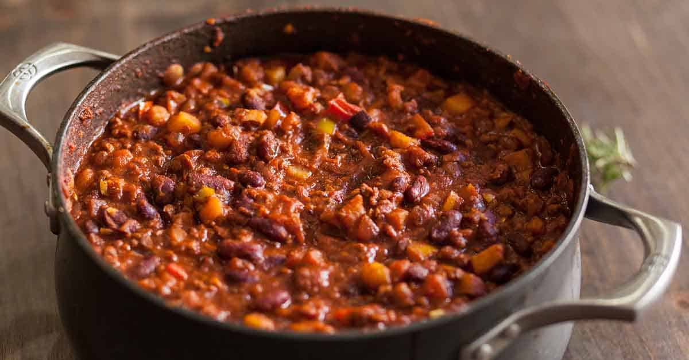

Classic Chilli Recipe

Entering a chilli contest can be heartbreaking, but judging one takes the skin of an elephant.
Ingrediants
- 1 Medium Green Pepper, Chopped
- 2 Medium Onions, Chopped
- 1 tbsp. Vegetable Oil
- 2 lbs. Ground Beef
- 2 Cans (28 oz.) Diced Tomatos, Undrained
- 1 Can (8 oz.) Tomato Sauce
- 1 Cup Water
- 2 tbsp. Worcestershire sauce
- 1-2 tbsp. Chilli Powder
- 1 tsp. Garlic Powder
- 1 tsp. Dried Oregano
- 1 tsp. Salt
- 1/2 tsp. Pepper
- 2 Cans (16 oz. Kidney Beans, Rinsed and Drained
- (Optional) Torilla Chips
Instructions
- In a Dutch oven or large soup kettle, saute green pepper, onions and celery in oil until tender, about 5 minutes. Add ground beef and cook until browned; drain. Stir in tomatoes, tomato sauce, water, Worcestershire sauce and seasonings. Bring to a boil; reduce heat. Cover and simmer for 1-1/2 hours, stirring occasionally. Add kidney beans. Simmer, uncovered, 10 minutes longer. If desired, serve with tortilla chips.
Nutrition
1 cup: 259 calories, 10g fat (4g saturated fat), 47mg cholesterol, 708mg sodium, 23g carbohydrate (7g sugars, 7g fiber), 20g protein.
Other Recipes
If you like what you see here, return to our homepage